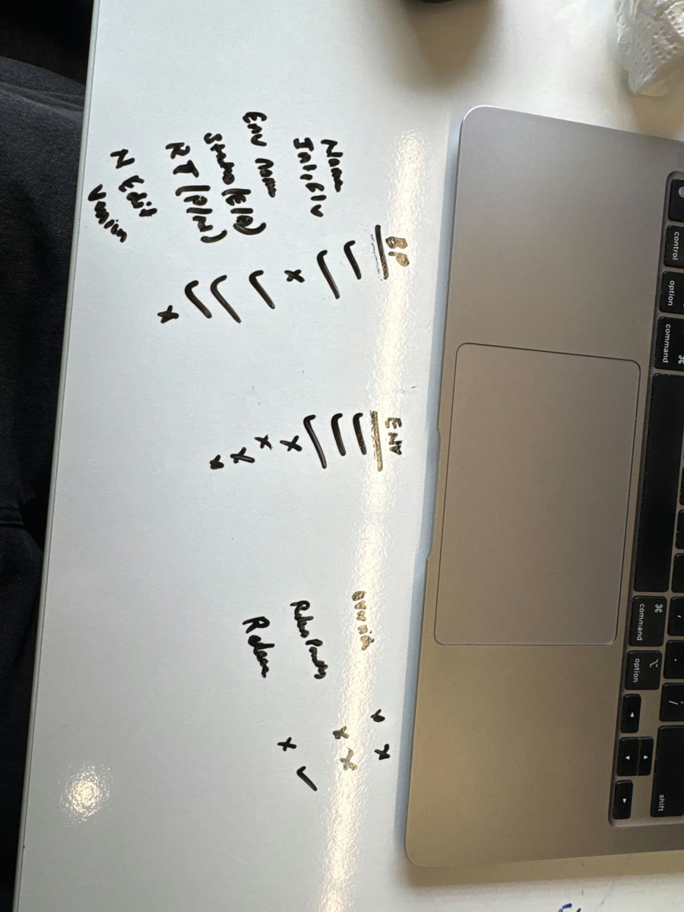
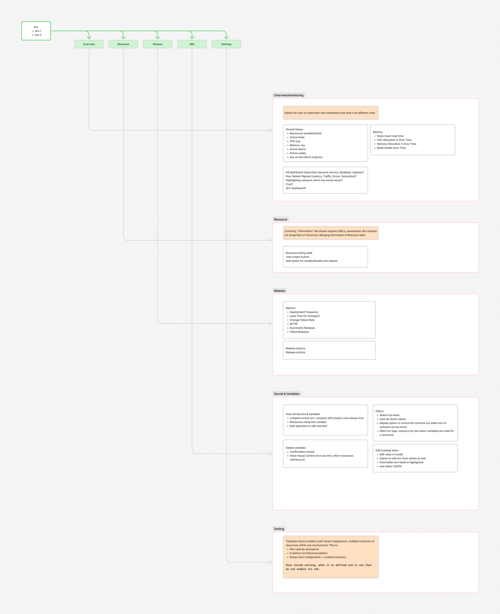
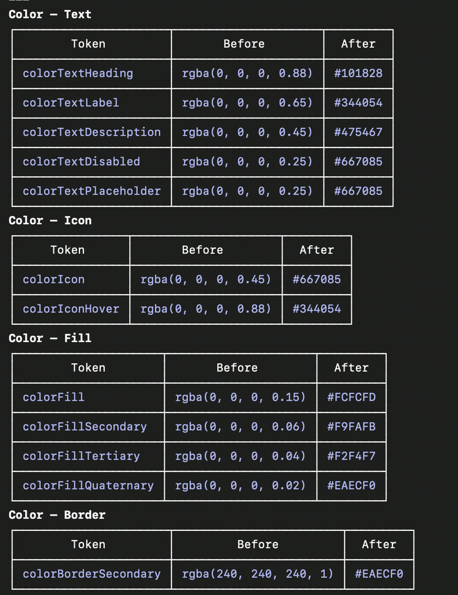
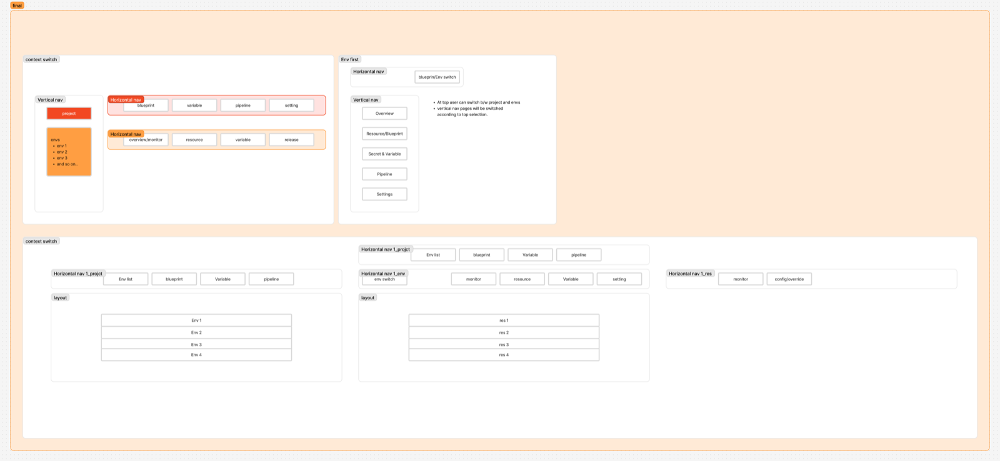
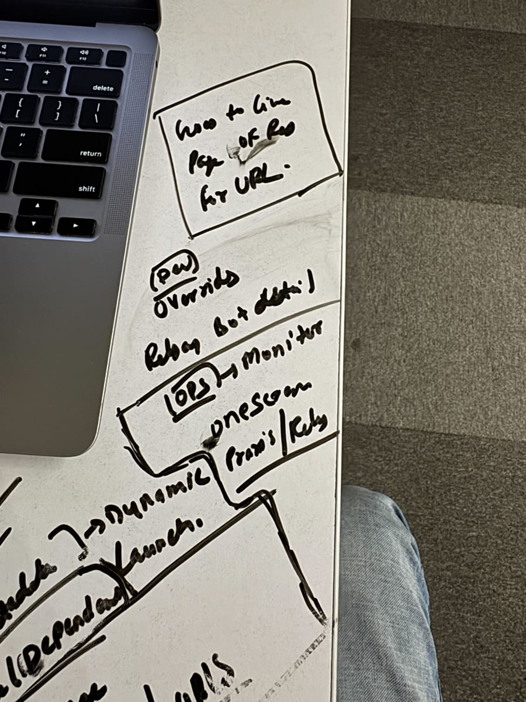
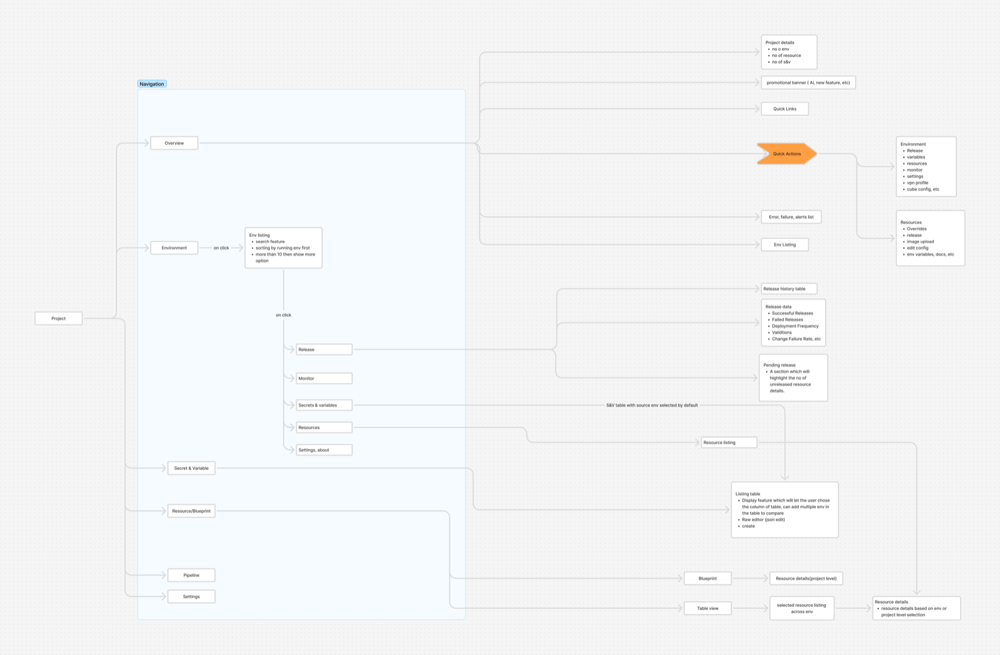
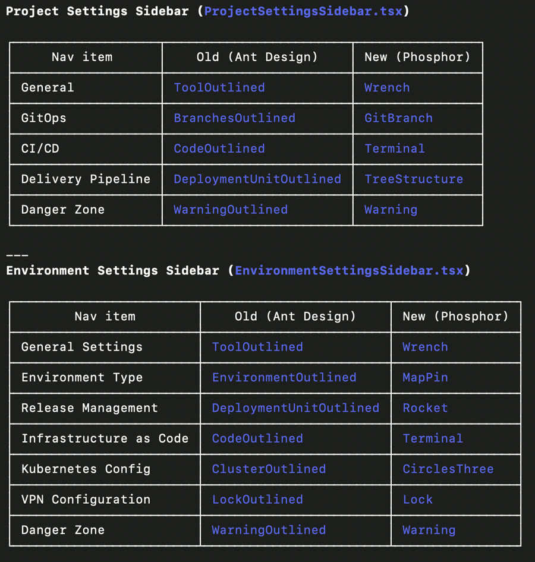
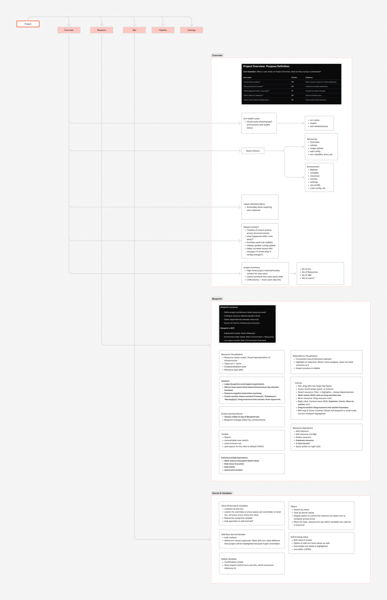
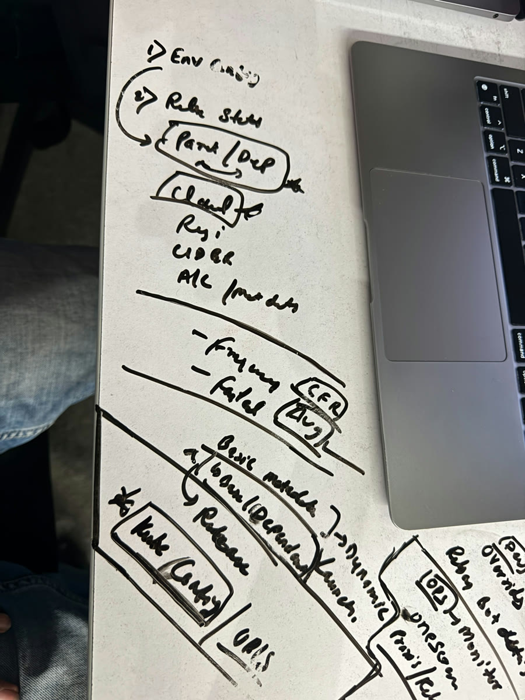

Facets is a self-service infrastructure platform used by 30+ companies to run production. I led the redesign end to end and built a good number of the screens myself, in the live React codebase.
A self-service infrastructure platform. Platform teams codify infrastructure as blueprints in Git, developers self-serve environments, and Facets generates the Terraform underneath, across AWS, GCP, Azure, and Kubernetes.
Everyday tasks took too many clicks and the navigation was confusing. It was built around the backend, not the two people living in it all day: developers and DevOps. An earlier redesign had already been rejected.
I rebuilt it around what those two people actually do, with org and project work on their own navigation. A new Project Overview cut the flagship daily task from 14 clicks to 6.
100% of customers moved off the two legacy UIs, one issue fixed same-day, and satisfaction rose from 5.8 to 8.4 out of 10.
This wasn't the first attempt. Facets had already tried to redesign inside its Angular app. Customers pushed back hard enough that two UIs had to run side by side for seven to eight months, and keeping both alive took roughly a quarter of the two-person frontend team's capacity.
A re-platform was already underway. Separately, Facets was moving its frontend from Angular to React for engineering reasons: framework limits, hiring, and long-term maintainability. Every screen was going to be rebuilt regardless.
That made this the moment. A straight lift and shift would have carried the same interaction problems into a new framework, and the team would have paid to fix them a second time later. Since the screens were being rebuilt anyway, fixing the experience added very little extra cost.
Everyday tasks took too many clicks, the navigation was confusing, and the UI was slow enough to get in the way — confirmed by ~19 support tickets a month and a previous redesign that already forced two UIs to run side by side for 7–8 months.
Shipping changes.
Keeping environments healthy.
In interviews, the same three words kept coming up — confusing, slow, too many steps.
We scored this on value versus effort, and it stood out on both.
A daily tax on 30+ paying customers' production work, the kind of friction that pushes people back to scripts.
The React re-platform was already touching every screen, so fixing the interaction model came at little extra cost, not a separate project.
Why now specifically. The re-platform was a one-time window to fix the information architecture while every screen was being rebuilt anyway, and the seven-to-eight-month dual-UI period was still fresh for everyone.
The upside. Removing per-task friction for around 40 daily operators, later measured at about 150 engineer-hours saved every month, plus lower churn risk.
| Target | Metric | Baseline → goal | |
|---|---|---|---|
| 01 | Org vs. project confusion | Support tickets asking who owns something or where it lives | ~19/moCut by half+ |
| 02 | Navigation and settings patterns | One-off drawer patterns across CI/CD, Release, and Role | 31 |
| 03 | Clicks to finish the job | Clicks to complete the flagship daily task | 14Under 7 |
| 04 | Speed across the core tasks | Time-and-steps score across the 5 unavoidable tasks | 100Clear reduction |
Usage is the wrong metric here: customers have to release, launch, and configure regardless of UI quality, so it would have flattered us without proving anything. Instead we split screens by choice. For the unavoidable ones (Release, Launch, config) we measured friction: time, clicks, drop-off. For the optional ones (dashboards, cost) we measured whether people came back and acted, because there a visit is a real vote.









Every other screen sat on top of the navigation, so it shipped first, in version one, before any other screen was built on top of a navigation model that might still change.
A top bar switched between the blueprint (project level) and the environments, and that choice rewrote the side nav beneath it.
Open a project and everything starts at the project level with one steady side nav. To go deeper, you drill into an environment, or jump straight there from Project Overview.
The migration had to move fast, so we adopted Ant Design instead of building a system from scratch. We built on top of it and made custom components only where it fell short, which kept our time on the flows and the hard screens.
Outside a project the sidebar shows org-level work; step inside and it is replaced entirely by project-scoped navigation. The two levels no longer share a menu, and the hierarchy is explicit: project, environment, resource.
One view lists every secret and variable across every environment, with reveal gated by permission and editing from the same place. Every resource that references a variable is listed alongside it, so changing one is not a guess.
Token architecture for light and dark built from the ground up, the groundwork most teams discover they need only after shipping. The icon system took two migrations to get right (Phosphor, then Lucide), and the toggle triggers a circular reveal from the exact point you click.
Measured against the four targets set up front, comparing each customer org against itself, before and after its own cutover.
There was no existing workflow for a designer shipping straight into production.
Lock the foundation first.
Every change was reviewed by the engineers building the same product.